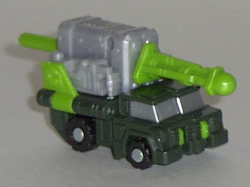
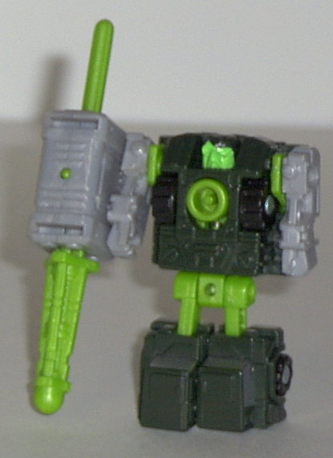
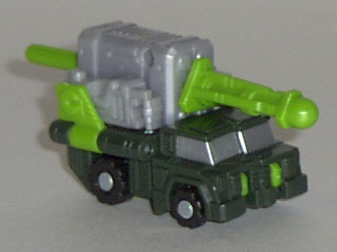
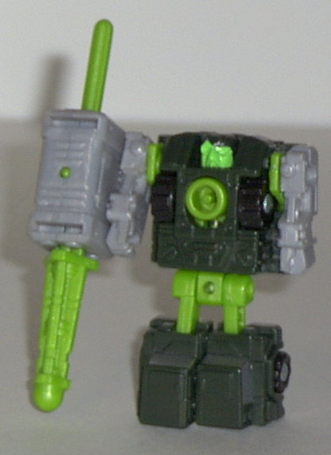
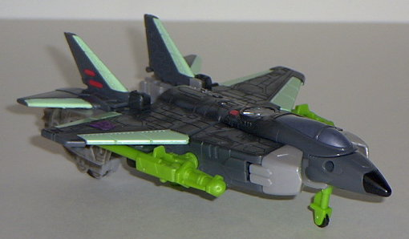
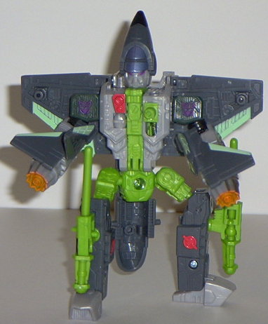
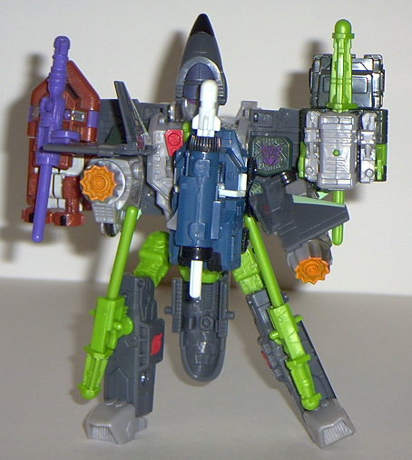

Inferno
Inferno
 
Allegiance : Minicon
Size : Mini-Con
Difficulty of Transformation : Very Easy
Color Scheme : Dark military green, light military green, light milky gray, and some silver, black, and bright lime green
Rating : 7.2
Inferno


Allegiance
: Minicon
Size
: Mini-Con
Difficulty of Transformation
: Very
Easy
Color Scheme
: Dark military green,
light military green, light milky gray, and some silver, black, and bright
lime green
Rating
: 7.2
Vehicle mode is a mobile
missile launcher artillery truck. This mode is pretty good, if you ignore
the robot fists on the sides of the missile launcher. No extras whatsoever,
and although there isn't much paint detailing, there's enough variance
in the color scheme where it's not really noticeable. Of course, the coolest
part of this mode is the great Minicon gimmick- yes, he fires a missile,
but there's no "trigger" in this mode to activate it. Instead, connect
him to a Powerlinx port on a larger Transformer, than pull BACK on Inferno
to fire the missile! Very innovative!
Inferno's robot mode
is a bit uninspiring design-wise, but he's certainly not bad at all, and
he has a couple of things to make him stand out from Joe Average Minicon.
For one, he's the only Minicon that has his own hand-held weapon- the missile
launcher from truck mode, which has a standard trigger available in this
mode so that you can fire the missile the traditional way. Plus, you can
take the missile launcher off his hand (it doesn't stay firmly in its hole
there, anyways) and connect it to his back to act as a sort of "jet pack"!
He also has pretty good articulation for a Minicon- he can move at the
shoulders, waist, hips, and knees. I also LOVE the way his face looks-
almost like some sort of grumpy old owl with a monocle for a right eye.
The thing is, the PAINT on it is a bit brighter than the rest of the green,
and doesn't match up very well. Still, minor nitpick. His Minicon symbol
is on the inside of his right arm.
Inferno's a pretty darn
cool Minicon, with only a few minor flaws (like the visible hands in vehicle
mode and the fact that his head is just molded into the body in robot mode).
Plus, his Minicon gimmick is loads of fun. Whee!
 Thrust
Thrust



Allegiance
: Decepticon
Size
: Super-Con
Difficulty of Transformation
: Easy
Color Scheme
: Light military green,
light milky gray, dark gray, light pastel green, and some black, red, light
orange, violet, dark military green, silver, and sparkly metallic blue-gray
Powerlinx ports
: 4 (1 gimmicked)
Rating
: 8.2
Vehicle mode is a jet.
I have to say, this mode is very, VERY nice. Absolutely no extras whatsoever,
and it's one of the few Transformers jets that doesn't have any robot parts
on its undercarriage. On top of that, it's sleek and well-designed, with
excellent proportions. There's also plenty of mold and paint detailing,
so he's anything but boring. (Although I think the light pastel green is
a couple shades too light). I especially like the faded, worn paint pattersn
given to the top of the plane and the sides of the rear engine sections.
As you can see, Thrust also has a flip-out landing gear in this mode as
well as two push-missile launchers. Plus, there's a square indentation
on the rear of the plane mode that is the perfect fit for his Minicon Inferno.
Awesome! Another plus is that Thrust's Decepticon symbol isn't just a solid
painted blob like on the earlier Armada toys.
Robot mode isn't as
good as the vehicle mode, although still alright. It suffers from a couple
of really odd design decisions, however. For one, his head- although it
is supposed to be a tribute to the three plane "coneheads" of G1, Thrust,
Dirge
, and Ramjet- looks kinda of stupid the
way they did it. The conehead part is too large, and the way it's slanted
backwards slightly, it looks like some kind of dunce cap. Plus, there's
a long.... thing (made up of part of the plane cockpit in vehicle mode)
hanging off his butt and between his legs, and it looks really odd. In
addition, his gimmick is probably the lamest of any Armada toy- basically,
you pull his plane wings out farther from his body, attach a Minicon to
his chest port, and then push down to activate a wing "twirling" action.
Now, that's bad enough as it is, considering it really doesn't have any
real battle function- but it doesn't even work! It CONSTANTLY bangs into
one robot part or another. Blech. Plus, the Powerlinx ports aren't really
situated very well- the wing ones are too close to the body for most Minicons
to really look good linked to them, and if you stick one on his chest,
it just looks plain weird. Oh, and his shoulders should be a little bigger
when compared to his large forearms. However, these complaints aside, I
love the rest of Thrust. His "air pilot"-esque mask on his face looks pretty
nice, and his thrusters-for-arms is AWESOME, and my favorite part of the
toy. They can easily be seen as rotary machine-guns for hands (and they
are in the box art), and I love guns for hands. I only wish they could
rotate if you turned the black wheels under them, but alas, they don't.
I also like the upside-down wings on his back, they really complement the
mode, and he has great mold detailing all over. He also has excellent articulation-
he can move at the head, shoulders (at two points), elbows, waist, hips,
and knees.
Thrust has a practically
perfect vehicle mode, but his robot suffers from some odd design choices,
such as his failing gimmick and his dunce cap head. If only these couple
of things were fixed, he could have been one of the best of Armada, but
he's still a pretty good toy. Just not outstanding.
Review by Beastbot